Cambios en el sector de la distribución.
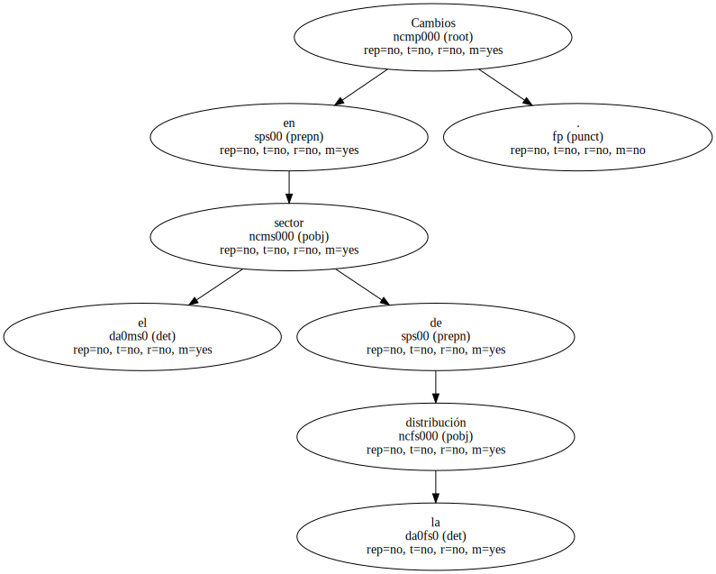La Confederació pide que Competencia actúe en la fusión de Pryca y Continente.
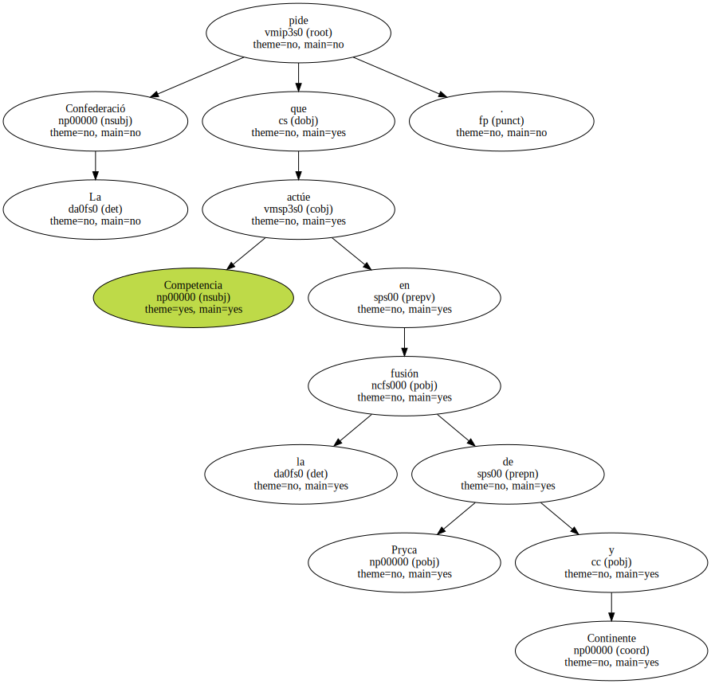Los ' botiguers ' prevén que la relación con los fabricantes empeorará.
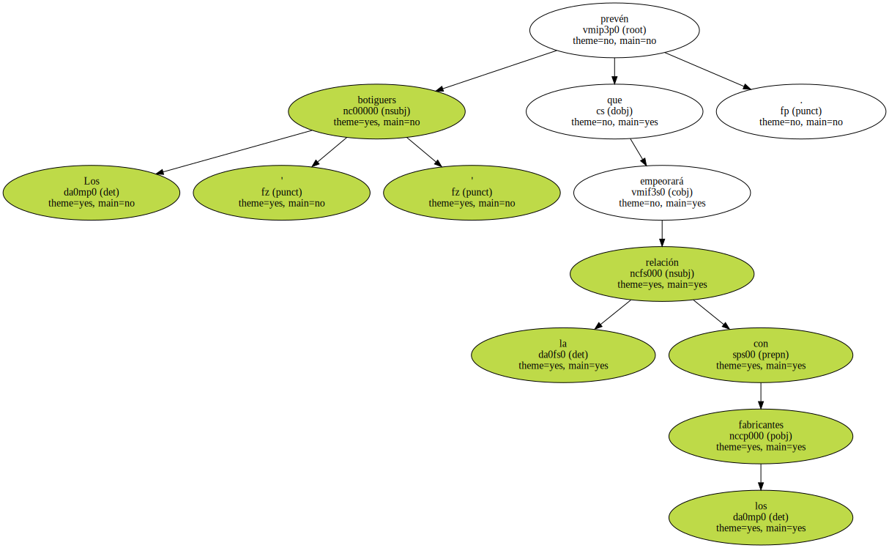Las tiendas tradicionales reclaman más ayudas para asegurar su futuro.
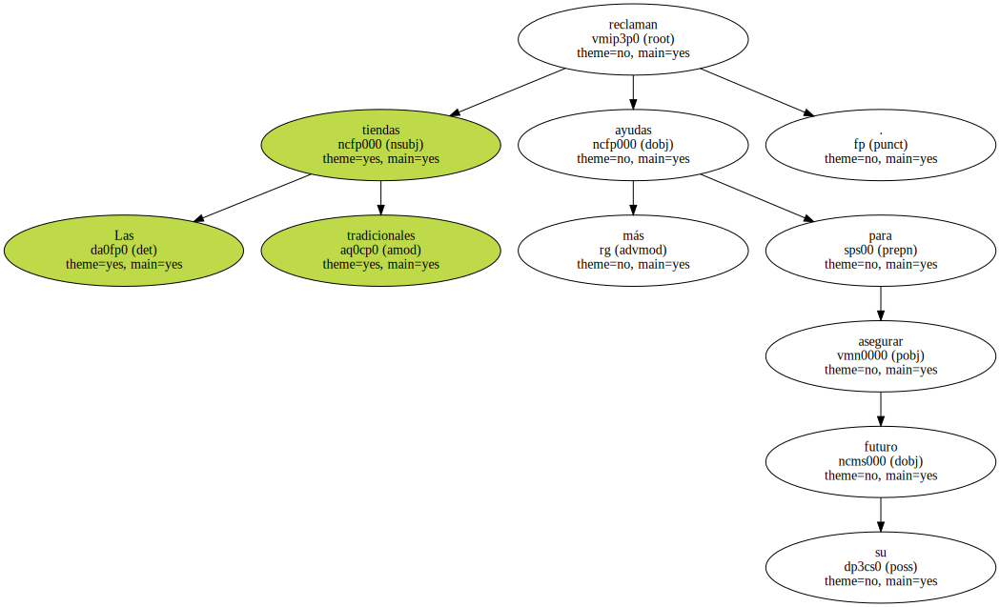La Confederació de Comerç de Catalunya ( CCC ) reclamó ayer que el Tribunal de Defensa de la Competencia " intervenga de oficio " y emita un informe sobre los efectos de la fusión entre los grupos franceses propietarios de Pryca ( Carrefour ) y Continente ( Promodès ) en el mercado español.
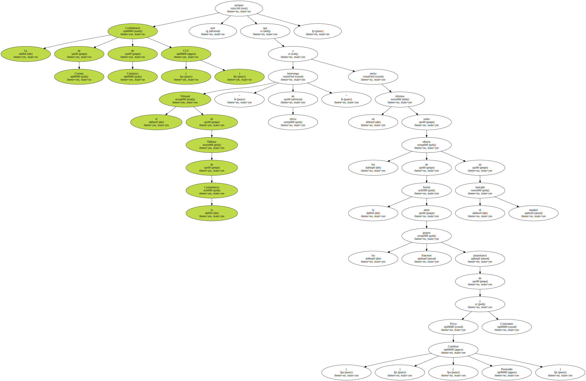El secretario general de la patronal , Miguel Angel Fraile , reclamó también la revisión de la ley de equipamientos comerciales de la Generalitat , normativa que gestiona y limita la oferta comercial en Catalunya , como consecuencia de los cambios provocados por el nacimiento del gigante francés.
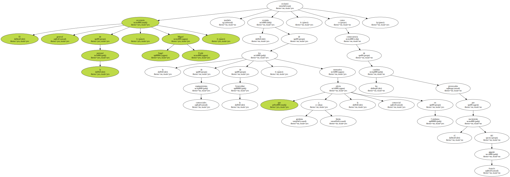El Ministerio de Economía ha comenzado a recoger información de los efectos que puede tener la fusión entre Carrefour y Promodès sobre la competencia en el sector español de la distribución.
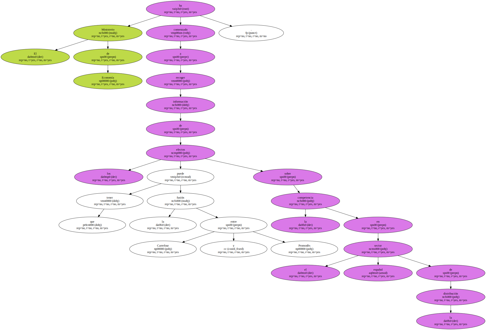El nuevo Carrefour España tendrá una cuota de mercado del 22,42% lo que le situará como líder en ventas del sector.
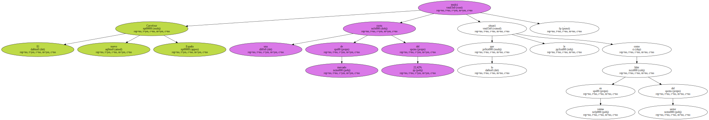El director general de Política Económica y Defensa de la Competencia , Luis de Guindos , afirmó ayer que su departamento vigilará " con especial atención " esta operación , y presentará las alegaciones oportunas a la Comisión Europea.
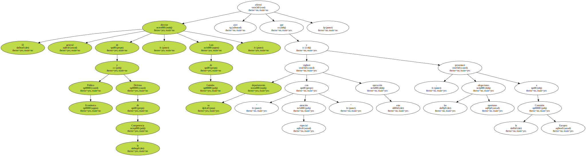En su opinión , " todo parece indicar que este caso deberá ser analizado por Bruselas ".
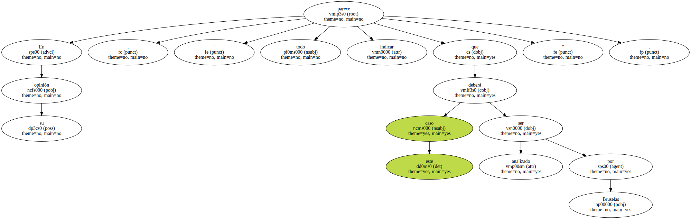La fusión se encontrará con trabas en Argentina , donde se ha aprobado recientemente una ley antimonopolio que impide que una firma controle más del 25% del mercado.
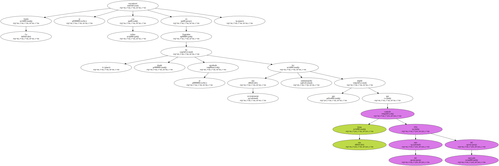Concentración.
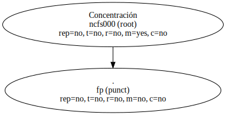El dirigente de CCC aseguró que el grupo resultante de la fusión entre los gigantes franceses Promodès y Carrefour " controlará entre el 60% y el 70% de los hipermercados catalanes ".
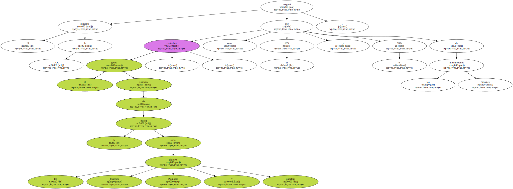Por esta razón , la CCC reclama que la Generalitat realice un nuevo estudio sobre el grado de concentración de grandes superficies y la oferta de comercios en Catalunya.
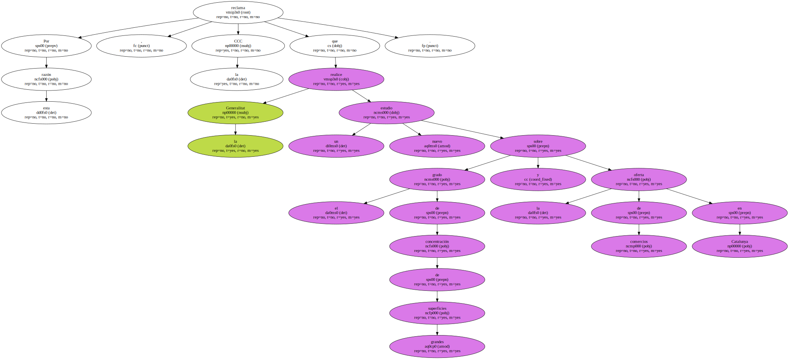Fraile opina que el acuerdo entre las cadenas francesas es una " mala noticia " para los consumidores y para los pequeños y medianos comerciantes en España , al endurecer las negociaciones entre fabricantes y distribuidores sin que eso provoque bajadas de precios.
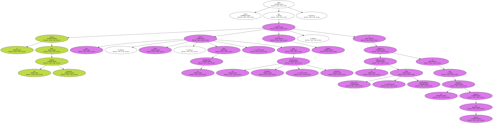Alrededor de 6.000 tiendas tradicionales al año desaparecen cada año en España , según la consultora Nielsen , en un proceso que amenaza con recrudecerse.
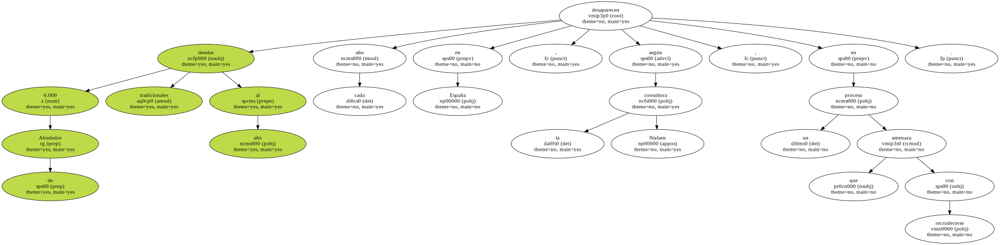El número de hipermercados y supermercados en España aumentó el 18% en 1998 , mientras los autoservicios de menos de 100 metros cuadrados y tiendas tradicionales bajaron el 20%.
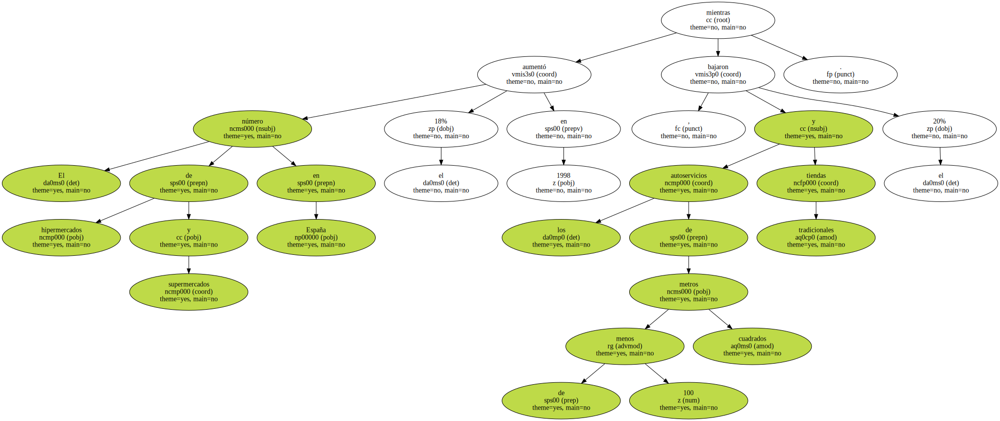El dirigente te aseguró que los grandes grupos " no repercuten sus economías de escala en los precios y además presionan sobre la industria y el sector agrario en beneficio propio ".
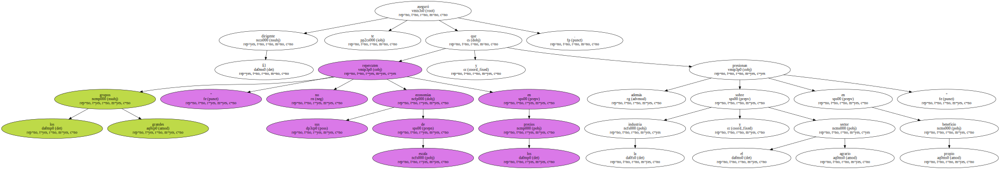En este sentido , subrayó los largos plazos de pago que sufren los proveedores de algunas grandes superficies , pese a la existencia de la ley de comercio que prohíbe esas prácticas.
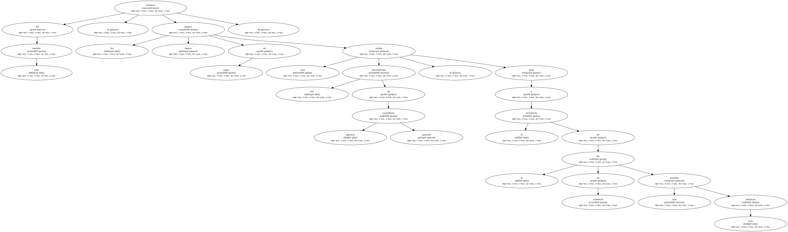La patronal del pequeño comercio reclamó también a la Generalitat que incremente el volumen de ayudas a la modernización del comercio tradicional y urbano , para que pueda competir con las nuevas fórmulas comerciales.
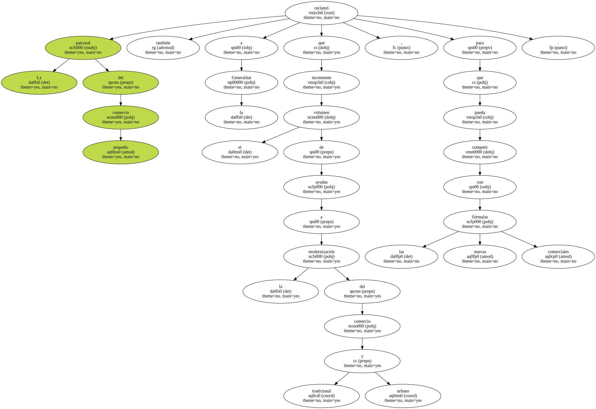El vicepresidente de la Confederación General de Medianos y Pequeños Empresarios ( Copyme ) , Salvador Bellido , mostró ayer una " gran preocupación " por la fusión , por entender que supondrá la creación de un monopolio " que quita la competencia y destruye la libertad de mercado ".
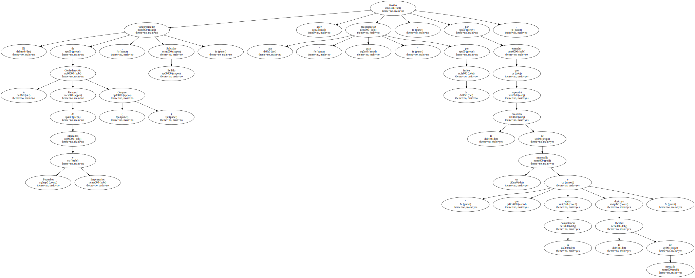La Asociación Nacional de Centrales y Grupos de Compra ( Anceco ) manifestó ayer que la fusión entre Carrefour y Promodès " no debe afectar negativamente a las centrales y grupos de compra españoles ".

El gerente del Grupo IFA y socio de Anceco , Rafael Rubio , opinó que esta fusión puede fomentar una mayor colaboración y unión entre las centrales de compra existentes.
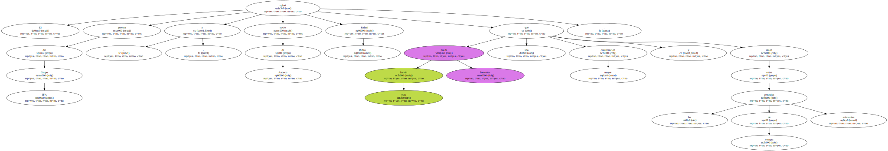